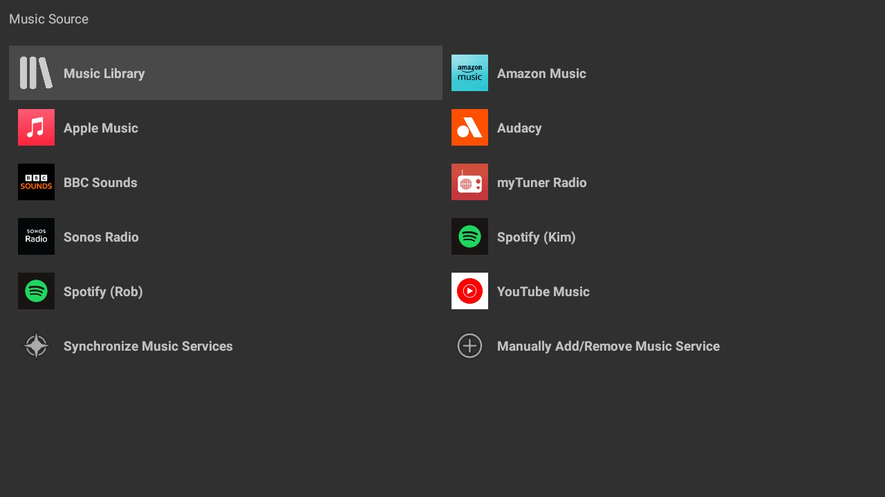
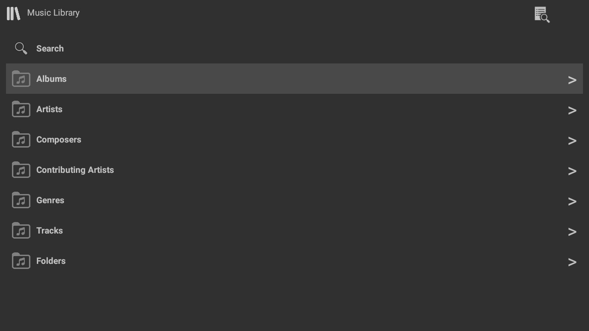
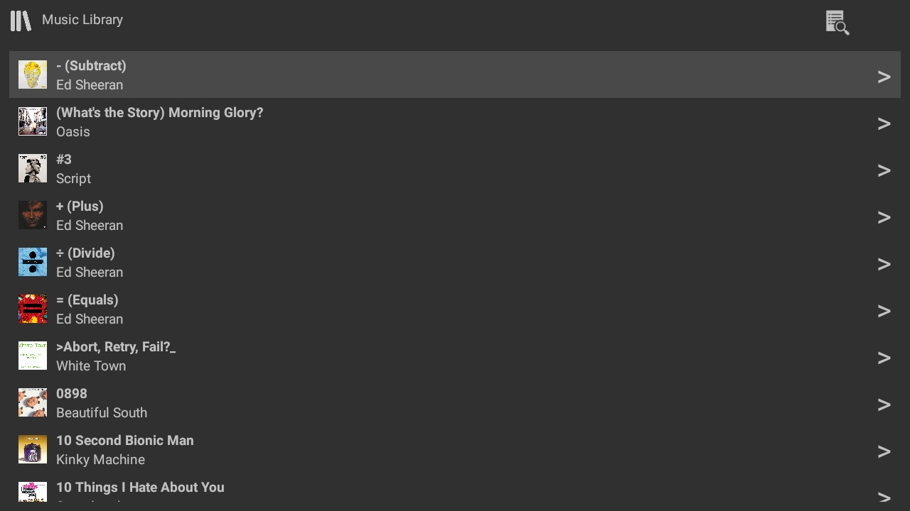
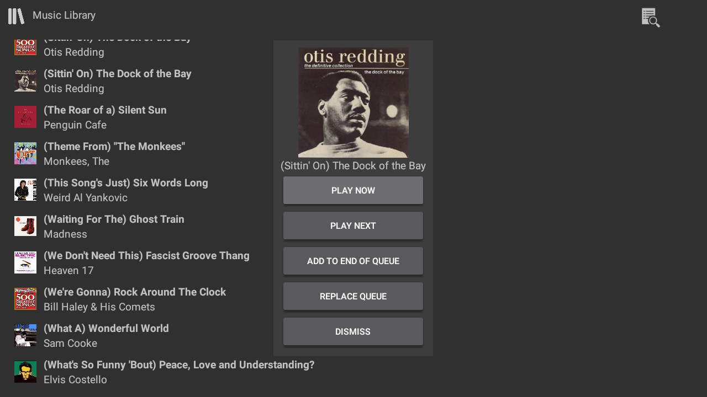
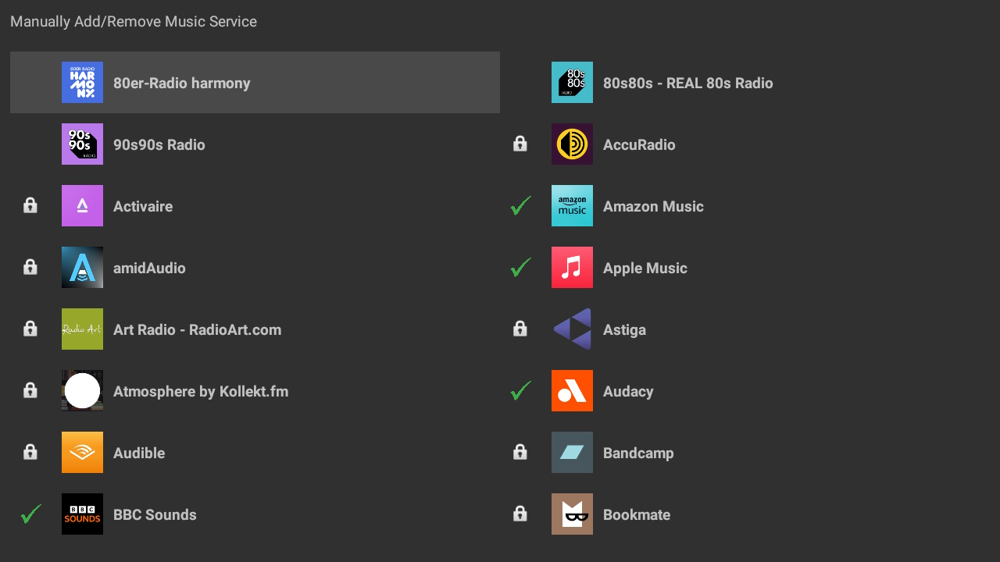

Library & Music Sources
Play from local and remote libraries and streaming services with the ability to import already configured services.

Music Source
TVONOS works with all the same Music Sources that Sonos does. On first use (or when you add a new Streaming Service to your Sonos system) select "Synchronize Music Services" to make them available in the Music Source list.

Music Library
If your system has a local music library then this can be browsed and searched. If your local files do not have metadata these will be shown in the Folders section, when playing TVONOS will try and use the filename and path to determine the track and artist (configurable in the settings)

Music Library Listing
When navigating the music library (either right arrow or swipping on touch screens) a list of items in the given selection will be displayed. For long lists there is a Filter option that will filter what is listed in the given section. (Album Art is only shown if provided by the Streaming service or embedded in the local library track)

Music Library Selection
When selecting a Folder or Track in a library or streaming service a dialog is displayed with the available actions for the item such as play or add to queue. This can be changed in the settings to not display the dialog and always perform a single action.

Managing Music Services
It is recommended that the "Synchronize Music Services" option is used to import your music services. It is possible to manually add music services that are already configured on your Sonos System. This option also allows the removal of a music service from your TVONOS installation (e.g. Restrict the services viewable on a TV in a particular room)